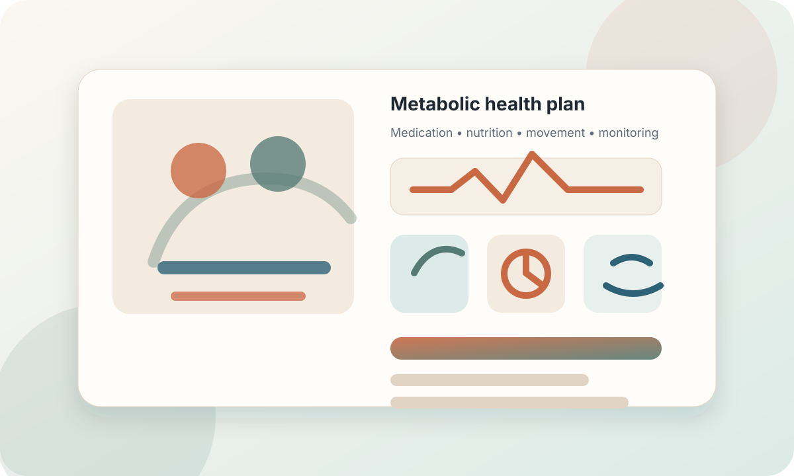

Obesity and type 2 diabetes often travel together because excess visceral fat, insulin resistance, blood pressure, cholesterol, sleep, stress, medications, genetics, and food environments all interact. That is why the most useful treatment plans are not one-dimensional.

What has changed: weight is now treated more like a medical signal
For years, patients were often told to lose weight with advice that sounded simple but did not match real biology. Today, clinicians have a better understanding of appetite regulation, insulin resistance, inflammation, sleep, medications that promote weight gain, and the way weight regain can occur after dieting.
That does not make nutrition and activity less important. It makes them more effective when they are paired with the right medical support instead of framed as a test of willpower.
Can reduce appetite, improve blood sugar, lower kidney or heart risk, or support weight loss when used for the right patient.
Home weight, blood pressure, glucose readings, labs, and symptoms help show whether the plan is working safely.
Sleep, stress, meal structure, strength training, and follow-up visits help protect long-term results.
GLP-1 and GIP/GLP-1 medicines: powerful, but not casual
Medications such as semaglutide and tirzepatide have received attention because they can help many people lose meaningful weight and improve blood sugar. They work through gut-hormone pathways that affect appetite, fullness, stomach emptying, and insulin response.
For some patients, these medicines can be life-changing. They may improve A1c, weight, blood pressure, cholesterol patterns, fatty liver risk, and cardiovascular risk markers. But they also require a real medical conversation.
- Common side effects include nausea, constipation, reflux, diarrhea, appetite loss, and abdominal discomfort.
- They may not be appropriate for people with certain medical histories or medication interactions.
- Rapid weight loss can mean muscle loss unless nutrition and resistance activity are addressed.
- Cost, insurance rules, shortages, and prior authorization can determine whether a plan is realistic.
Diabetes medications now think beyond the glucose number
Type 2 diabetes care has also evolved. A1c still matters, but modern treatment increasingly asks a broader question: does this plan reduce the patient’s risk of heart attack, stroke, heart failure, kidney disease, hypoglycemia, and medication burden?
SGLT2 inhibitors are one example. For selected patients, they can help blood sugar while also offering heart failure and kidney-protection benefits. GLP-1 medicines may also be useful in diabetes care when weight, appetite, cardiovascular risk, and glucose are all part of the picture.
Older medications still have a place. Metformin, insulin, sulfonylureas, DPP-4 inhibitors, and other options may be appropriate depending on cost, kidney function, A1c, hypoglycemia risk, goals, and tolerance.
Technology helps when it changes decisions
Continuous glucose monitors, smart insulin pens, insulin pumps, connected blood pressure cuffs, and patient portals can make diabetes care more responsive. The value is not the gadget itself; the value is what the data helps the patient and clinician do next.
For example, a glucose monitor may reveal overnight lows, post-meal spikes, or patterns tied to schedule, stress, sleep, medications, or meal composition. That can make visits more practical and less dependent on guesswork.
Procedures and surgery are part of the conversation for some patients
For people with more severe obesity or obesity-related complications, bariatric surgery and some endoscopic procedures may be appropriate options. These are not shortcuts. They require evaluation, preparation, nutritional monitoring, and long-term follow-up.
For the right person, though, procedural options can improve weight, diabetes control, sleep apnea, reflux, blood pressure, joint pain, and quality of life. The best decision depends on health status, goals, risk, access, and readiness for follow-up.
The prior authorization reality
One of the least glamorous but most important parts of modern metabolic care is insurance approval. Many newer obesity and diabetes treatments require documentation before coverage is granted.
- Current BMI and weight history
- Prior lifestyle or medication attempts
- Related conditions such as diabetes, hypertension, sleep apnea, fatty liver disease, or cardiovascular disease
- Recent labs and treatment goals
- Follow-up plan and response to treatment
If a medication is denied, the next step may be an appeal, a different covered medication, a patient-assistance program, or a more affordable alternative. The point is to keep the plan moving instead of letting paperwork become the treatment.
A practical primary-care framework
If you are discussing obesity, prediabetes, or type 2 diabetes with your clinician, a useful visit often includes:
- Risk review: A1c, blood pressure, cholesterol, kidney function, liver markers, sleep apnea risk, family history, and medications that affect weight.
- Goal setting: Blood sugar goals, weight goals, function goals, symptom goals, and what success would actually look like in daily life.
- Treatment fit: Which options are medically appropriate, affordable, available, and sustainable.
- Safety plan: Side effects to watch for, when to call, what labs to recheck, and how to avoid low blood sugar if diabetes medicines change.
- Follow-up rhythm: A plan to adjust treatment instead of waiting months while frustration builds.